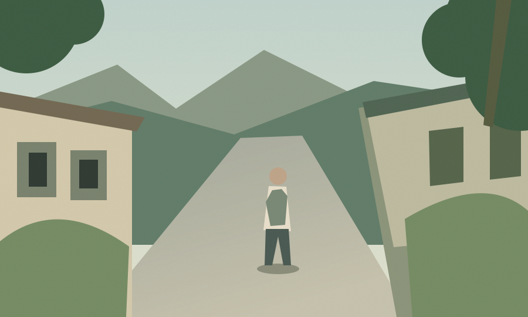

판단의 근거를 확인할 수 있게 합니다.
어디를, 왜 확인해야 하는지 이해할 수 있도록.
결과와 함께 확인 구간과 참고할 자료를 연결합니다.
01 / 우니드 소개
우니드는 창작자가 창작에 더 집중할 수 있는 환경을 만드는 회사입니다.
콘텐츠를 만드는 일에는 아이디어와 편집만 있는 것이 아닙니다. 공개 전 확인부터 이후의 운영까지, 눈에 잘 보이지 않는 수많은 일이 함께합니다.
우리는 제작 이후의 복잡한 확인과 운영 과정을 기술로 돕고자 합니다. 창작자의 시간과 선택을 존중하는 제품을 만들며, 지금은 그 첫 번째 서비스인 Creadar를 개발하고 있습니다.
조금 더 자유로운 창작을 위해, 우니드.02 / 우리가 해결하려는 문제
콘텐츠를 만드는 일은 제작으로 끝나지 않습니다.
공개를 준비하고 운영하는 과정에도 확인과 판단이 이어집니다.
놓친 것은 없는지, 만든 콘텐츠를 다시 살펴보는 일.
필요한 기준과 믿을 수 있는 자료를 직접 찾아보는 일.
공개 준비와 운영 과정에서 생기는 여러 일을 챙기는 것.
반복되는 확인의 부담을 덜면,
다음 창작을 위한 여유가 생깁니다.
03 / 제품을 만드는 원칙
우니드가 제품을 만들 때
중요하게 생각하는 기준입니다.
어디를, 왜 확인해야 하는지 이해할 수 있도록.
결과와 함께 확인 구간과 참고할 자료를 연결합니다.
기술은 창작자의 판단을 돕는 역할을 합니다.
작품의 맥락과 최종 선택은 창작자의 몫입니다.
아직 세상에 나오지 않은 창작물의 가치를 생각합니다.
데이터 처리 기준은 서비스 공개 시 명확히 안내하겠습니다.
04 / 우니드가 만드는 서비스
창작 이후의 확인을 돕는 첫걸음입니다.
영상 공개 전에 놓치기 쉬운 지점을 찾는
AI 콘텐츠 점검 서비스를 개발하고 있습니다.
개인정보 노출 후보와 촬영·출입 제한 안내를
발견할 수 있도록 돕습니다.
확인이 필요한 구간과 함께
관련 공식 자료를 제공합니다.
결과를 확인하고 영상을 수정한 뒤,
다시 점검하는 흐름을 만듭니다.

장면을 선택해 확인 지점을 살펴보세요.
인물이 포함된 구간을 확인하고, 공개 전 동의 여부와 가림 처리 필요성을 검토해 주세요.
이해를 돕기 위한 예시 화면입니다. 개발 중인 서비스의 실제 화면과 기능은 달라질 수 있습니다.
LET’S CREATE WHAT’S NEXT
우니드와의 사업·협업 제안이나
만들고 있는 서비스에 관해 문의해 주세요.